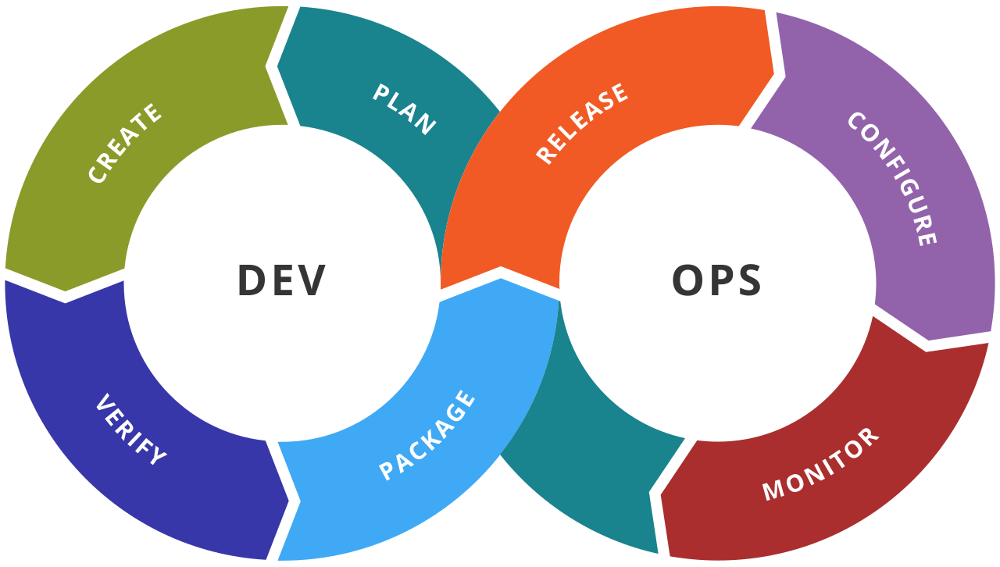

Cloud
- AWS
- EC2
- S3
- VPC
- IAM
- Route53
DevOps Engineer | Cloud Enthusiast | Automation
Deploying scalable applications using Kubernetes, Terraform, Docker & CI/CD.

DevOps Engineer with hands-on experience in AWS Cloud, Docker, Kubernetes, Terraform, Linux, and CI/CD automation. Skilled in deploying scalable cloud infrastructure, managing Kubernetes clusters, and automating deployments using Jenkins and GitHub Actions. Strong understanding of Linux administration, networking, and cloud technologies with a focus on automation and scalable system design.
Passionate and detail-oriented DevOps Engineer with a strong academic foundation in computer applications and cloud technologies. Skilled in AWS, Docker, Kubernetes, Terraform, Linux, and CI/CD automation with hands-on experience building real-world cloud infrastructure and deployment projects. Focused on designing scalable, secure, and automated systems while continuously improving problem-solving and infrastructure management skills. Experienced in creating production-ready DevOps projects including EKS cluster deployments, containerized applications, infrastructure automation, and cloud monitoring solutions. a Strong interest in Cloud Computing, DevOps Engineering, Site Reliability Engineering (SRE), and Infrastructure as Code (IaC). Dedicated to learning modern technologies and building efficient deployment pipelines that improve application reliability and scalability. Actively developing professional projects and expanding expertise in Kubernetes orchestration, AWS cloud services, automation tools, and monitoring systems to grow as a professional DevOps Engineer.
Tilak Maharashtra Vidyapeeth, Pune
New English Junior College, Nagpur
Gurukul Convent High School, Nagpur
 AWS
AWS Docker
Docker Kubernetes
Kubernetes Terraform
Terraform Jenkins
Jenkins GitHub Actions
GitHub Actions Linux
Linux Python
Python MySQL
MySQLGreamio Technologies · Nagpur, Maharashtra, India
Welt EduLearn · Nagpur, Maharashtra, India

Production-ready Kubernetes deployment on Amazon EKS using YAML manifests.

Implemented CI/CD automation using Jenkins for continuous build and deployment pipelines.

Automated AWS infrastructure provisioning using Terraform for multi-tier cloud architecture.
Designed and deployed secure 3-tier AWS architecture with frontend, backend, and database layers.

Containerized legacy applications with multi-stage builds and compose stacks.

Automated testing, security scanning, and deployment workflows using GitHub Actions.